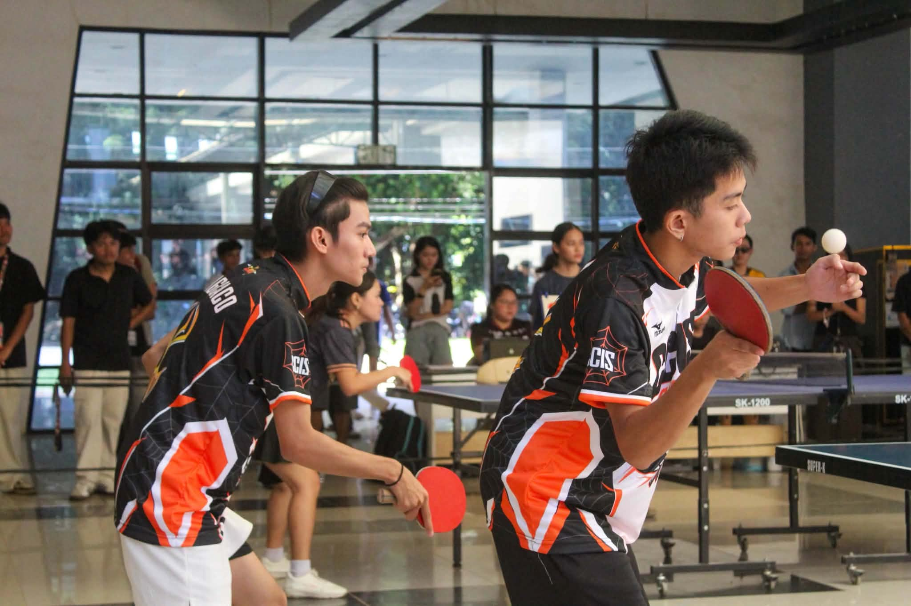
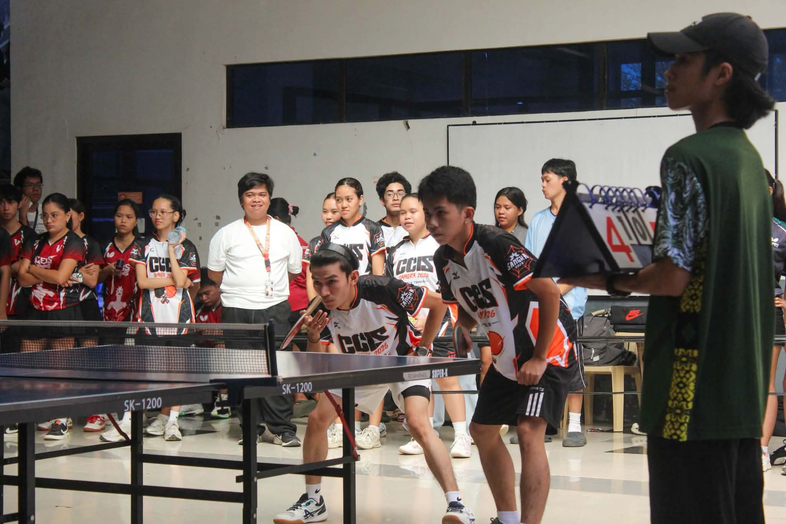
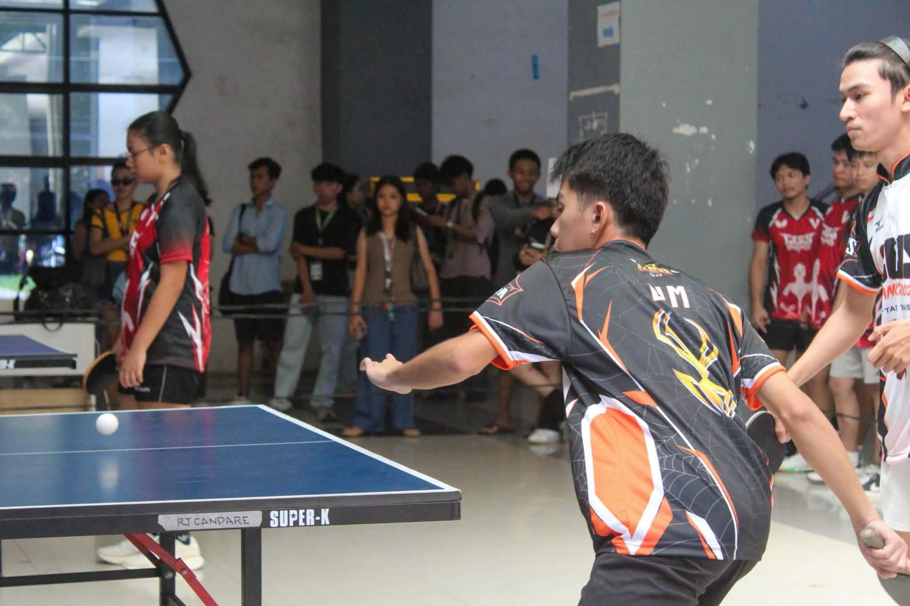
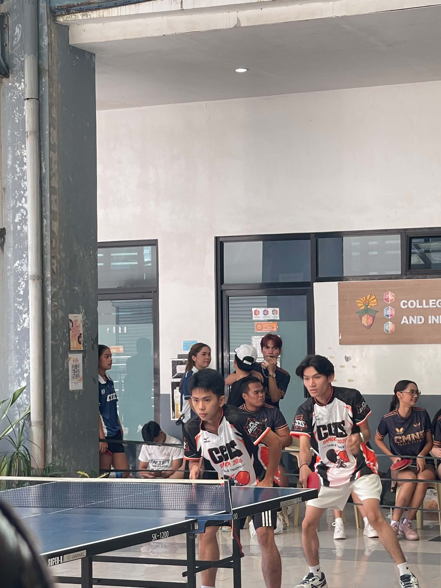
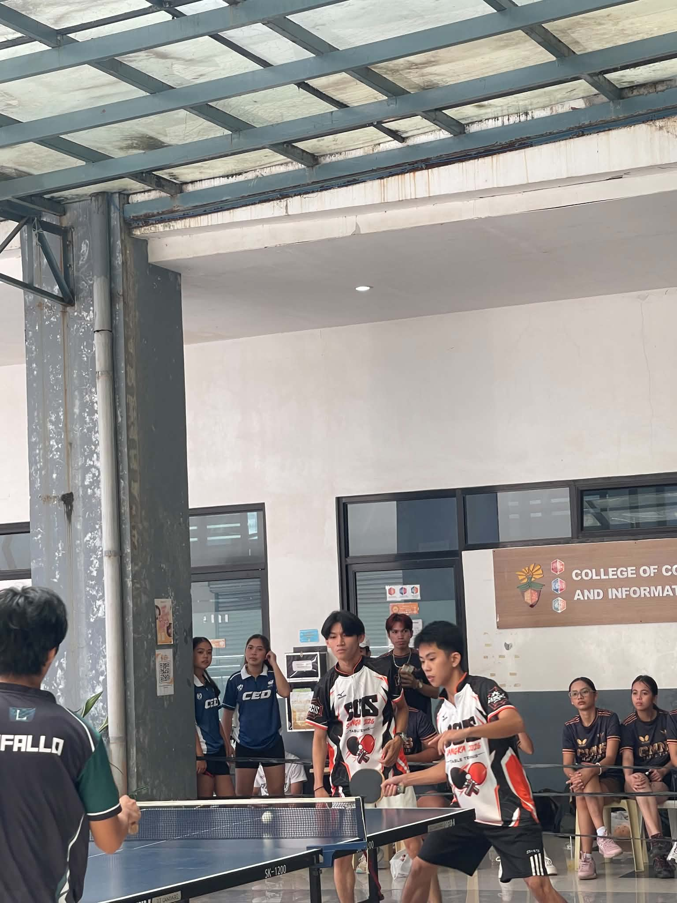

Introduction
Have you ever watched a table tennis match where the ball moves so fast you can barely follow it? That's doubles! It is one of the sports I find interesting because it combines quick reflexes, teamwork, and strategy in a small space. At CCIS Sangka 2026, I saw how much fun it is for both the players and the crowd. In this blog, I'll share some basic steps for beginners who want to try playing table tennis doubles.
1. Learn How to Serve
Every point starts with a serve. Hold the ball on your open palm, toss it straight up, and hit it so it bounces once on your side and then on your opponent's side. In doubles, the serve goes diagonally, from your right half of the table to the opponent's right half.

2. Stay Low and Ready
Between shots, bend your knees and keep your weight on the balls of your feet. Keep your paddle in front of you and your eyes on the ball. Being ready lets you move quickly in any direction.

3. Practice Your Return
When the ball comes back, reach forward and use a short, controlled stroke instead of a big swing. Focus on getting the ball back over the net first. Speed and spin can come later with practice.

4. Take Turns With Your Partner
In doubles, you and your partner must hit the ball in turns. After you hit, step out of the way so your partner can reach the next ball. Good teamwork and movement matter just as much as a strong shot.

5. Stay Focused and Enjoy the Game
A game is played to 11 points, and you must win by 2. The crowd, the scoreboard, and the pressure can be distracting, so take a breath between points. Play fairly, respect your opponents, and have fun.

Conclusion
Table tennis doubles is more than just a campus game. It is a sport that teaches teamwork, focus, and patience. For beginners, the most important thing is to start with the basics, practice with your partner, and enjoy every match. You don't have to be an expert to have fun!